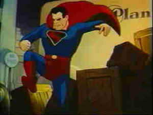

|
Superman Cartoons of Max
and Dave Fleischer/B,B |
|
Image/1941-43/147mFS 1.33 |
Nostalgia plays a key element in the pleasure yielded from this collection of
17 Superman cartoons. Produced in the early forties, there is a quaintness about the
animation style and storytelling as well. Each episode introduces Superman with the traditional
"able to leap tall buildings," and then goes on to present another physical challenge for
Superman to solve. Usually, someone is trying to destroy or blackmail Metropolis and naturally Lois
Lane gets in the act, trying to scoop Superman's alter-ego reporter Clark Kent.
|

|
|
Superman takes off. ©Image |
Ranging eight to ten minutes each. The standard introduction including screen credits for each
episode lasts close to one and a half minutes and if you watch the cartoons straight through you'll
wish they had added chapter stops at the end of each introduction. Villains range from the very
mute Bulleteers in their phallic vehicles of destruction to mad scientists. The wartime cartoons
make sure to take a pot shot or two at the Japanese and the Nazis. No one ever accused Superman of
being less than an all American hero except for maybe Lex Luther. Probably the best way to watch
these enjoyable cartoons is one or two at a time before the main attraction at the home theater.
The source material for these vintage cartoons is in pretty decent shape. The colors have a
special feeling to them, not faded, yet with a flinty quality. I rather enjoyed the visual aspect.
The sound is often a bit scratchy, but the element dirt and damage is acceptable. Animation fans
will enjoy the quaint element that defines the characters and their movement. Comic book fans have
got to love an animated Superman to call their very own. In addition to the 17 Superman
episodes, there's one cartoon entitled Snafuerman, a parody from Warner Brothers. |
|
|
|
|

Selections from the Feature Archive
include articles on Akira Kurosawa, Frank
Darabont, Blonde Bimbos, Hollywood Street Gangs, or Vietnam: The
Hollywood Pariah, and many more....

Hail, Hail, the Gangs in Hollywood
From Angels with Dirty Faces to West Side Story to
Menace II Society, Hollywood has depicted youth gangs as reflections of the times.


The American Widescreen Museum, is the ultimate resource for widescreen movie information, Martin
Hart's reliable site is a great tool for movie buffs.
MRQE
Find reams of movie and DVD reviews at the Movie Review
Query Engine, a index of reviews appearing on the Internet.
 Lovers of
Hong Kong movies will relish MC4's
site that includes reviews and other information about the Hong Kong movie scene. Lovers of
Hong Kong movies will relish MC4's
site that includes reviews and other information about the Hong Kong movie scene.
|